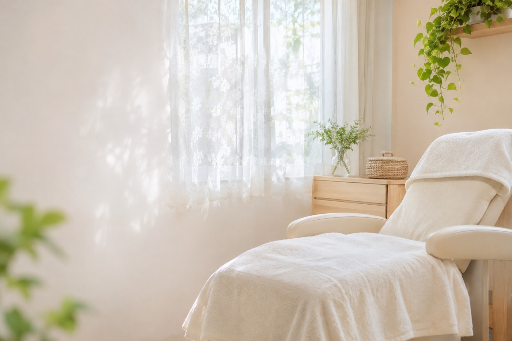
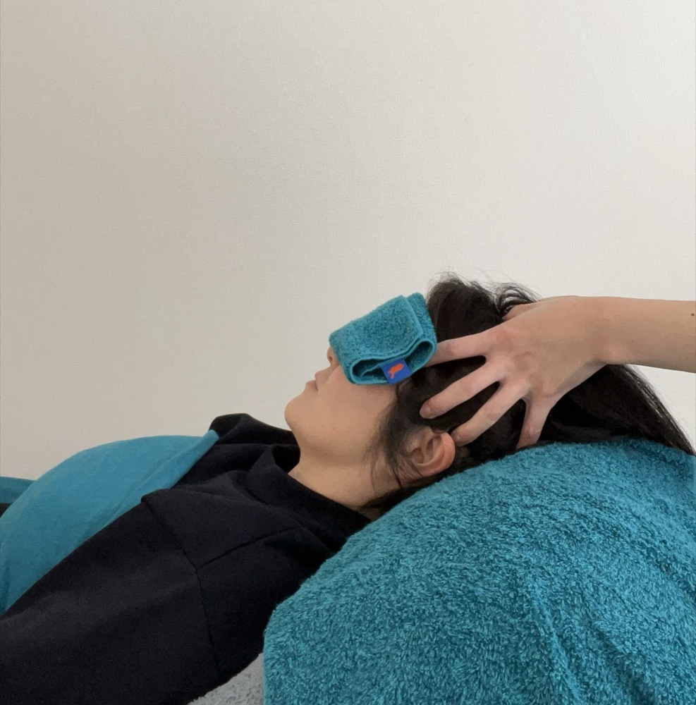

AIのイメージ（仮）池袋発 薄毛迷子の子羊さんへ
10代から薄毛に悩み、サロン3か所・クリニックを経験した xxxx が運営要確認：運営か担当か
薬に頼らない池袋の育毛頭皮ケア専門サロン「Scalp Care Salon SAMPLE」
- いつ：土日対応可能。平日10:00〜22:00／土日祝9:00〜19:00（最終受付：平日19:00・土日祝17:00／定休日：不定休）
- どこで：Scalp Care Salon SAMPLE（池袋）
- 誰が：育毛業界20年。自身も薄毛経験者の xxxx が対応
- 何を：薬に頼らない発毛表現の確認・育毛頭皮ケア
- 今だけ：初回無料お試しキャンペーン（先着5名・11月いっぱい仮）
どこに相談すればいいのか。もう一人で迷わなくて大丈夫です。
2. 共感・問題提起
こんなお悩みありませんか
電車で座った時、上から見られている気がして心から安らげない。
彼氏や家族にさえ頭頂部を見せるのが怖い。
湿気の多い日は朝セットした髪がぺちゃんこ。一日中気分が沈む。
- 分け目やつむじが目立つようになってきた
- シャンプーのたびに抜け毛の量にドキッとする
- 写真を撮られるのが前より苦手になった
- 育毛剤をいろいろ試したけれど効果を感じられなかった
- クリニックは薬や副作用が心配で一歩を踏み出せない
- 薄毛で悩んでいること自体を誰にも言えずにいる
ひとつでも当てはまれば、ぜひ続きを読んでみてください。
薬に頼らず身体の内側から整えていく。その選択肢は意外と知られていません。
年齢のせいだから仕方ないとあきらめる前に。できることがあるかもしれません。
3. 解決方法提示
頭皮から整える根本ケア表現の確認
クリニックでは飲み薬を使うことが多く、副作用や身体への負担を心配する声も少なくありません。
SAMPLEは薬に頼らない方法で発毛表現の確認をサポートします。
軸は頭皮の血行や環境を整えること。一人ひとりの状態に合わせて施術します。
自身も薄毛に悩んだ xxxx が、不安に寄り添いながら無理のないペースで進めます。
「とりあえず薬で何とかする」のではなく、身体そのものが持つ力を引き出す表現の確認お手伝いをする。
それがSAMPLEの考え方です。
4. ベネフィットの羅列
髪だけでなく毎日が変わる表現の確認
発毛表現の確認ケアは髪が増える表現の確認ことだけが目的ではありません。
気持ちや毎日の過ごし方にも良い影響が広がっていきます表現の確認。
1. 鏡を見るのが楽しみになる表現の確認
分け目やつむじの印象が気にならなくなると、鏡を見る回数が自然と増えていきます表現の確認。
2. 人と会うのが楽しくなる表現の確認
写真を撮られることへの抵抗感が薄れたという声も少なくありません表現の確認。
3. 薬を使わない施術
内服薬や外用薬を使わない施術です。
4. 誰にも知られずに通える
周りに話す必要はありません。自分のペースで静かにケアを続けられます。
5. 自分の年齢に自信が持てる表現の確認
見た目の印象が明るくなり表現の確認、気持ちも前向きになったという声をよくいただきます表現の確認。
6. 無理なく続けられる
土日も対応しています。料金は事前にご説明します。
5. 自分ごと（こんな方におすすめ）
こんな方にぴったりです
- 薬を使った治療に抵抗がある方
- 育毛剤を試しても効果を感じられなかった方
- 高齢で持病があり、薬の服用が心配な方
- 通っていることを誰にも知られたくない方
- 平日は忙しく、週末しか通えない方
- 一人で通うことに不安がある高齢の方（ご家族の付き添いもできます）
ひとつでも当てはまる方は、ぜひ一度ご相談ください。
6. 自己紹介・プロフィール
ご挨拶
はじめまして。xxxxです。
私自身、10代の頃から薄毛に悩んできました。
朝、鏡を見るたびに分け目が気になる。友人と写真を撮られるのが苦痛だった時期もあります。
育毛サロンを3か所。発毛表現の確認クリニックも経験しました。
高い費用を払っても「本当にこれで合っているのか」という不安が消えませんでした。
薬を使う治療は身体への負担を感じて、踏み出せなかったことも一度や二度ではありません。
だからこそ、同じように悩む方の気持ちが人一倍分かるつもりです。
薬に頼らず身体にやさしい表現の確認方法で発毛表現の確認をサポートしたい。その思いからこのサロンで働くことを決めました。
育毛業界に携わって20年。一番大切にしているのは「お客様の不安に寄り添うこと」です。
休日の楽しみは散歩と食べ歩きです。
7. メッセージ
届けたいこと
薄毛の悩みを誰にも相談できず、一人で抱え込んでいる方へ。
「もう遅いかもしれない」とあきらめかけている方へ。
強い薬に頼らなくても、できることがあります。
人に知られたくないお気持ちを何より大切にします。
一人暮らしで通うのが不安な方にも、安心して来ていただけるサロンでありたいと考えています。
鏡を見るのが楽しみになる。人と会う時間が待ち遠しくなる。表現の確認
そんな小さな変化のきっかけを、全力でお手伝いします。表現の確認
8. お客様の声
お客様の声
要確認：旧店名のころの声・掲載確認中
多くの方が、最初は半信半疑で来店されます。
Kさん 主婦
55歳/女性
【以前の悩み】
全体にうすい。前髪の抜け毛。
【…を選んだ理由】
友達の紹介で良いサロンだと聞いて。
【発毛実感】 表現の確認
すごくあります。スタッフの方に出会い色々お話を聞いて安心して来店できました。 表現の確認
3年経過してますが発毛したままです。ありがとうございます。 表現の確認
【抜け毛や薄毛、…で悩んでいる方へ一言】
髪が生える喜びは本当に幸せです。… 表現の確認
ありがとうございました。
Uさん 主婦
40歳/女性
…
【以前の悩み】
頭頂部のセットに時間がかかっていて、どこを分けても薄かったです。
【…を選んだ理由】
自宅から一番近かったので選びました。通いやすい自宅近くが良いと思います。
【発毛実感】 表現の確認
・セットがとても楽になりました。 表現の確認
・日常生活を見直す良い機会になりました。
・何が良くて何が悪いのかを分かりやすく教えて頂きました。
【抜け毛や薄毛、…で悩んでいる方へ一言】
毎日毎日鏡を見て悩んでいるのなら、思い切って相談された方が良いと思います。
私もその一人でしたが、今では良かったと思っています。
主婦にとっては決して安い値段とは言えませんが、悩みが無くなるのなら十分に価値はあると思います。
Wさん OL
23歳/女性
…
【以前の悩み】
頭頂部の薄毛、髪の細さ。
【…を選んだ理由】
実際にお試し体験ができたから。
2度も相談に応じて下さり、ここなら大丈夫かもと思えたから。
【発毛実感】 表現の確認
初期脱毛など不安も多くありましたが、3カ月経ち以前の写真と比べてみて、とても驚きました。 表現の確認
確実に見えていた頭皮部分の範囲も狭くなっており、ツヤも出ました。 表現の確認
これから先がさらに楽しみです。
【抜け毛や薄毛、…で悩んでいる方へ一言】
本当に生えるのか初めは半信半疑でしたが、絶対にやってみた方が良い！と今は思います。 表現の確認
今なら初回無料でお試しいただけます
カウンセリング・頭皮診断・初回施術まで、すべて無料です（先着5名・11月いっぱい仮）。
「本当に効果があるのか」という不安。その答えをまずはご自身の目と頭皮で確かめてみませんか。表現の確認
9. 商品説明（施術の内容・流れ）
発毛表現の確認ケアについて
池袋の店舗にお越しいただき、施術を受けていただきます。
施術は頭皮の血行促進を目的とした手技が中心です。要確認：施術の中身
痛みを伴うものではありません。リラックスできる時間として多くのお客様にご好評いただいています表現の確認。
施術時間や頻度は頭皮の状態に応じて個別にご提案します。
続けていただくことで、少しずつ変化を実感いただけるケースが多くなっています表現の確認。
即効性を求めるものではありません。身体の力を引き出しながら表現の確認、時間をかけて整えていきます。
はじめての方へ 5つの流れ
ステップ1 お電話またはLINEでご相談
今のお悩みを簡単にお伝えいただくだけで大丈夫です。xxxxが丁寧に対応し、日程を調整します。
ステップ2 ご来店日の決定
土日を含め、ご都合の良い日を一緒に決めます。持ち物や注意点があれば事前にご案内します。
ステップ3 カウンセリング・頭皮診断
今の頭皮の状態や、これまで試したケアを詳しく伺います。
毛穴・血行・乾燥・皮脂の状態を確かめます。合った施術プランをご提案します。
ステップ4 施術こちらで作成
頭皮の血行促進を目的とした手技を中心に施術します。要確認：施術の中身

旧LPの写真（仮）ステップ5 プランと費用のご説明こちらで作成
続ける場合のプランと費用を丁寧にご説明します。その場で無理に契約を迫ることはありません。
10. 特徴・選ばれる理由
選ばれる6つの理由
1. 薬を一切使わない
内服薬や外用薬を使わず、頭皮環境を整えることを中心に施術します。
持病をお持ちの方や薬の服用に抵抗がある方にもご利用いただけます。
2. 自身も薄毛経験者だからこその理解
xxxx自身も10代から薄毛に悩み、サロンやクリニックを渡り歩いた経験があります。
お客様と同じ目線に立ち、不安な気持ちに寄り添います。
3. プライバシーへの配慮
写真撮影を求めることはありません。看板のないマンションサロンです。要確認：今もそうか
建物名とお部屋番号はご予約時にお伝えします。
4. 土日も対応
平日は仕事や家事で忙しい方も通いやすいよう、土日の施術にも対応しています。
5. 初回無料でお試し
まずは無料で体験。施術やスタッフの対応を見てから、続けるかどうかをご判断ください。
無理な勧誘は一切行いません。
6. 料金は事前にご説明
費用は事前にしっかりご説明します。追加料金が発生する場合も、必ず事前にご相談します。
店舗情報・アクセスこちらで作成
店舗情報・アクセスこちらで作成
Scalp Care Salon SAMPLE
住所：東京都○○区○○0-00-00
※建物名とお部屋番号はご予約時にお伝えします
○○線 ○○駅から徒歩○分
○○線 ○○駅から徒歩○分
○○線 ○○駅から徒歩○分
営業時間：平日10:00〜22:00 土日祝9:00〜19:00
最終受付：平日19:00 土日祝17:00
定休日：不定休
11. 不安や疑問の解消（よくある質問）こちらで作成
よくある質問こちらで作成
質問 薬は使いますか？
答え 使いません。内服薬や外用薬を使わず、頭皮環境を整えることを中心に施術します。
質問 料金はどれくらいかかりますか？
答え 初回は無料です（先着5名・11月いっぱい仮）。2回目以降は頭皮の状態やご希望の頻度によって異なります。カウンセリングで具体的なプランと費用をご説明します。
質問 以前、ほかのお店で高額な機械を買わされました。大丈夫ですか？
答え 強制でご購入いただく高額機械などはありません。要確認：施術の中身無理な勧誘も一切行いません。
質問 施術は痛くないですか？
答え 痛みを伴うものではありません。リラックスできる時間としてご好評いただいています表現の確認。
質問 どのくらいの頻度で通いますか？
答え 施術時間や頻度は頭皮の状態に応じて個別にご提案します。
質問 家族と一緒に行ってもいいですか？
答え はい。ご家族やお友達と一緒にご来店いただくことも可能です。
質問 通っていることを人に知られたくありません。
答え 看板のないマンションサロンです。写真撮影を求めることもありません。
質問 電話がつながりません。
答え 施術中は電話に出られないことがあります。留守番電話にお名前とお電話番号を残してください。こちらから折り返しご連絡します。LINEは24時間受付中です。
12. 金額
料金について
初回限定 完全無料（先着5名・11月いっぱい仮）
カウンセリング・頭皮診断・初回施術まで、すべて無料です。
実際の雰囲気や施術を体感してから、続けるかどうかをご判断いただけます。
2回目以降の料金は頭皮の状態やご希望の頻度によって異なります。要確認：2回目以降の金額
カウンセリングでお客様に合わせた具体的なプランと費用を丁寧にご説明します。
オプションをご希望の場合も、事前に金額をお伝えします。
分割払いにも対応しています。
13. 特典（後押し）
今だけの特典 初回施術 完全無料キャンペーン
- カウンセリング無料
- 頭皮診断無料
- 初回施術費用無料
先着5名・11月いっぱい仮
薬を使わない発毛表現の確認ケアがどんなものか、まずは体感していただきたい。
その想いから、初回は無料でご案内しています。
14. 申し込み（期限・限定）
先着5名・11月いっぱい仮
スタッフの対応数に限りがあるため、ご案内できる人数には限りがあります。
「気になっているけれど迷っている」という方こそ、今のタイミングをお見逃しなく。
ご予約・お問い合わせはこちらから
電話：03-0000-0000
営業時間：平日10:00〜22:00 土日祝9:00〜19:00
最終受付：平日19:00 土日祝17:00
定休日：不定休
施術中は電話に出られないことがあります。留守番電話にお名前とお電話番号を残してください。こちらから折り返しご連絡します。
LINE：友だち追加から24時間受付中要確認：今のSAMPLEのアカウントか
15. 支払い方法・キャンセルポリシー・特商法
お支払い方法
- クレジットカード：VISA/MasterCard/JCB/AMEX
- 電子マネー
- 分割払い
要確認：カードの種類・現金・銀行振込
キャンセルについて
内容をご確認中です。
16. 最後に（想い）
一人で悩まず、まずは気になることを話してみてください
かつての私がそうだったように、小さな一歩が気持ちを軽くするきっかけになるはずです。
心を込めて対応させていただきます。
xxxx
フッター（店舗情報）
Scalp Care Salon SAMPLE
電話：03-0000-0000
LINE：https://lin.ee/XXXXXXX
© 2026 Scalp Care Salon SAMPLE All Rights Reserved.こちらで作成